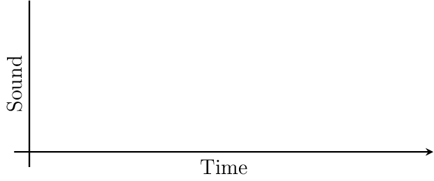
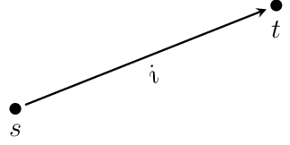
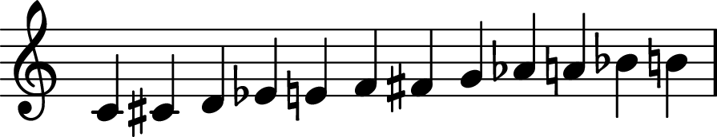

1. Fundamentals¶
The theory presented in here can be described as a tonal theory in the sense that its most fundamental objects are tones, discrete musical entities that have a certain location in tonal space. A tonal space is then a metrical space describing all possible tone locations, and the metric is given by an interval function between the tones. Note that by this definition, there are as many different tonal spaces as there are interval functions.
While many aspects and examples will be taken from Western (classical) music, the theory is in principle not restricted to this tradition but extends well to virtually all musical cultures where a tone is a meaningful concept.
Perhaps the most simple description of music is sound organized in time (attributed to Edgar Varèse, see also [72]). Later we will see that this description falls short of encompassing many central aspects to music but it provides a good starting point for our considerations. Taking this definition for granted means that we can conceptualize music within a two-dimensional framework, where the axes represent sound and time, respectively (see Fig. 1.1). Note that only the x-axis (“Time”) is not represented as an arrow to indicate that in music (as in life) we can only move forward.

Fig. 1.1 Two-dimensional depiction of music: music as sound organized in time.
This is also the way music is usually displayed in Digital Audio Workstations (DAW) that feature a master window where music blocks can be arranged along a fixed timeline. Producing music in these environments thus quite literally consists of stacking blocks on top of one another.
1.1. Tones¶
Let’s start with a mental exercise: imagine a tone. Contemplate for a while what this means. Does this tone have a pitch? A duration? A velocity (volume)?
Riemann (1916). Ideen zu einer Lehre von den Tonvorstellungen:
“The ultimate elements of the tonal imagination are single tones.” (Wason and Marvin [68], p. 92).
Bearing that in mind, let’s create (or instantiate) a tone. To do so, we need to conceptualize (“vorstellen” in Riemann’s terminology) a tone location (“Tonort”, Mazzola [33], p. 241). There are many different ways to do this. In fact, the way we specify the location of a tone defines the tonal space in which it is situated. The figure below is an adaptation from Lewin [28].

Fig. 1.2 Two abstract tones \(s\) and \(t\), and the interval \(i\) between them.
The fact that music operates with discrete pitches has also been argued to be crucial for its evolution [62].
1.1.1. Frequencies¶
Each tone corresponds to some fundamental frequency \(f\) in Hertz (Hz), oscillations per second.
Overtone series
frequency ratios
logarithm: multiplication => addition
1.1.2. Euler Space¶
One option is to locate a tone t as a point \(p=(o, q, t)\) in Euler Space, defined by
a number of octaves o, fifths q, and thirds t. We will use the gamuth.Tone
class for this
from gamuth import Tone
t = Tone(o=0, q=0, t=0)
From this representation we can derive a variety of others, corrsponding to transformations of tonal space.
1.1.3. Octave equivalence¶
Octave equivalance considers all tones to be equivalent that are separated by one or multiple octaves, e.g C1, C2, C4, C10 etc. More precisely, all tones whose fundamental frequencies are related by multiples of 2 are octave equivalent.
1.1.4. Tonnetz¶
The Tonnetz does not contain octaves and thus corresponds to a projection
1.2. Pitch classes¶
A very common object in music theory is that of a pitch class. Pitch classes are equivalence classes of tones that incorporate some kind of invariance. The two most common equivalences are octave equivalence and enharmonic equivalence.
1.2.1. Enharmonic equivalence¶
If, in addition to octave equivalence, one further assumes enharmonic equivalence, all tones separated by 12 fifths on the line of fifths are considered to be equivalent, e.g. \(\text{A}\sharp\) and \(\text{B}\flat\), \(\text{F}\sharp\) and \(\text{G}\flat\), \(\text{G}\sharp\), and \(\text{A}\flat\) etc.
The notion of a pitch class usually entails both octave and enharmonic equivalence. Consequently, there are twelve pitch classes. If not mentioned otherwise, we adopt this convention here. The twelve pitch classes are usually referred to by their most simple representatives, i.e.
but it is more appropriate to use integer notation in which each pitch class is represented by an integer \(k \in \mathbb{Z}_{12}\).
and usually one sets \(0\equiv \text{C}\). This allows to use modular arithmetic do calculations with pitch classes. In standard music notation, this would be rendered as

1.2.2. Other invariances¶
OPTIC
1.2.3. Tuning / Temperament¶
1.3. Intervals¶
Pitch intervals
Ordered pitch-class intervals (-> rather directed)
Unordered pitch-class intervals
Interval classes
Interval-class content
Interval-class vector
1.3.1. GISs¶
Transformations between representations of tones are actually transformations of tonal space.
[Diagram of relations between different representations.]